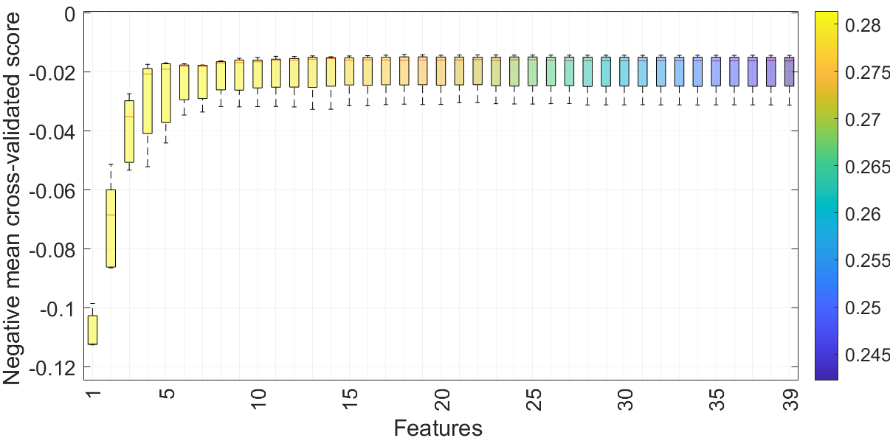
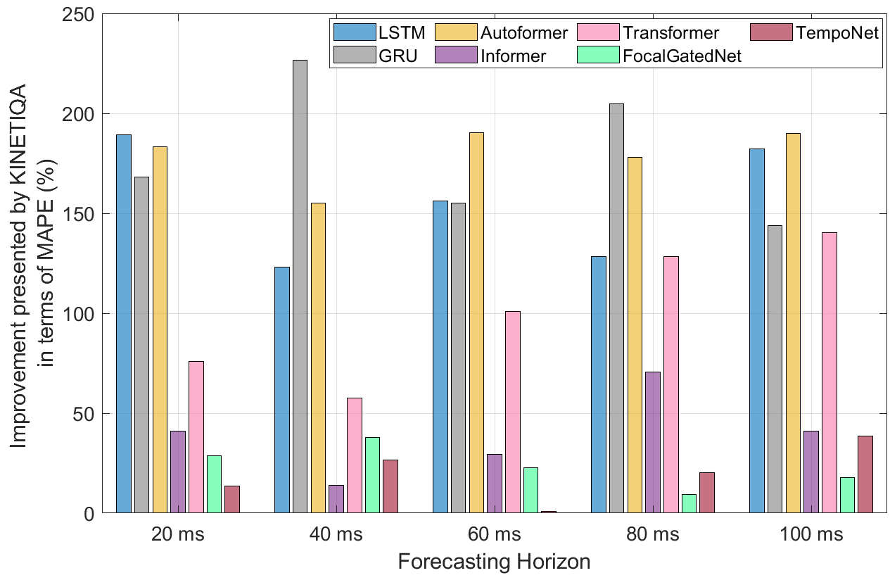

KINETIQA Model Architecture Overview

Feature Selection via Random Forest + RFECV

We present KINETIQA, a Transformer-based model tailored for real-time knee joint angle prediction in exoskeleton-assisted rehabilitation. It integrates temporal convolutions, recursive feature elimination, and quality-driven attention to enhance long-horizon gait forecasting while maintaining computational efficiency. KINETIQA significantly outperforms baselines like Transformer, TempoNet, LSTM, and FocalGatedNet, achieving over 20% MAPE reduction and demonstrating resilience to various sensor noise types including Gaussian, uniform, and salt-and-pepper noise. Inference latency remains under 25ms on RTX 4090 hardware, making it suitable for closed-loop biomechanical control in real-world settings.
@article{saoud2025kinetiqa,
title={KINETIQA: Kinematic Integration Network with Enhanced Temporal Intelligence and Quality-driven Attention for Precise Joint Angle Prediction in Exoskeleton-based Gait Analysis},
author={Saad Saoud, Lyes and Hussain, Irfan},
journal={Submitted to IEEE Access},
year={2025},
note={Under review}
}To ensure transparency and support future research, we have created a dedicated project webpage at https://github.com/LyesSaadSaoud/KINETIQA/. The page provides comprehensive access to all resources required to reproduce our experiments, including:
requirements.txt and configuration files
All experiments were implemented using PyTorch 1.13.1 in PyCharm (Community Edition 2023.1) on a Windows 11 system with an NVIDIA RTX 4090 Ti GPU, CUDA 11.7, and cuDNN 8.6. Python version 3.10.9 was used, and environment setup was managed using venv and pip. While Docker was not used, the complete environment and setup instructions are thoroughly documented on the project page to ensure replicability.